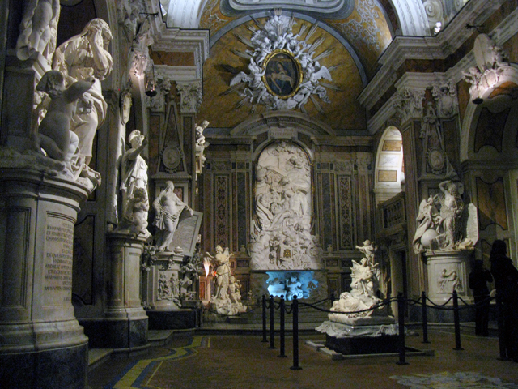

Piazza del Plebiscito:
Piazza del Plebiscito (già largo di Palazzo o Foro Regio) è una piazza di Napoli posizionata al termine di via Toledo, non appena oltrepassata piazza Trieste e Trento.
Ubicata nel centro storico, tra il lungomare e via Toledo, con una superficie di circa 25 000 metri quadrati la piazza si presenta come una delle più grandi della città
e d'Italia e per questo è quella più utilizzata per le grandi manifestazioni.
 plebisciti
plebisciti
SpaccaNapoli:
è la via per eccellenza della città. È uno degli antichi decumani,
rimasto ben inciso nel tessuto urbano della città. Per la precisione è il decumano inferiore,
che prende nell’area centrale i nomi ufficiali di via Benedetto Croce e via Forcella. La strada va dai Quartieri Spagnoli a Forcella,
tagliando in linea retta la città. Lungo il tragitto sono tanti i monumenti, le chiese e gli angoli da vedere. Fate attenzione anche ai muri: ad esempio a Forcella è possibile
ammirare il fantastico San Gennaro realizzato dallo steet-artist Jorit. Camminando nel ventre della città è possibile toccare con mano la vera essenza di Napoli.
SPACCA NABOLI
Cappella San Severo e Cristo Velato:
nel vostro soggiorno partenopeo non può affatto mancare una visita alla Cappella San Severo,
considerata il tempio artistico e scientifico del Principe di Sansevero, Raimondo di Sangro.
La cappella ospita il famoso Cristo Velato. Un’autentica perla dell’arte barocca realizzata dal partenopeo Giuseppe Sanmartino nel 1753.
Ricavata interamente da un unico blocco di marmo, l’opera rappresenta, in scala reale, il corpo di Gesù Cristo morto coperto da un velo, realizzato dallo stesso blocco.
Un velo che lascia intravedere il volto ed il corpo del Cristo. Attorno a questo velo di marmo, che sembra trasparente, è nata una vera e propria leggenda.
Si dice, infatti, che il principe alchimista abbia rivelato allo scultore una formula magica per cristallizzare il velo di marmo sul corpo del Cristo.

Cappella